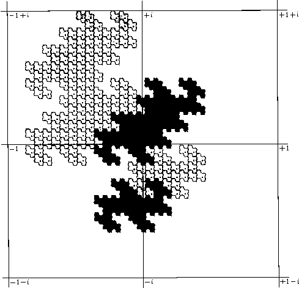

Figure 2. [Item 55] Similar to 1(a), but showing fraction parts as well. Reprinted by special permission from Knuth, The Art of Computer Programming, Volume 2, Seminumerical Algorithms, 1969, Addison-Wesley, Reading, Mass.

Figure 2. [Item 55] Similar to 1(a), but showing fraction parts as well. Reprinted by special permission from Knuth, The Art of Computer Programming, Volume 2, Seminumerical Algorithms, 1969, Addison-Wesley, Reading, Mass.
[Retyped and formatted in html ('Web browser format) by Henry Baker, April, 1995.]